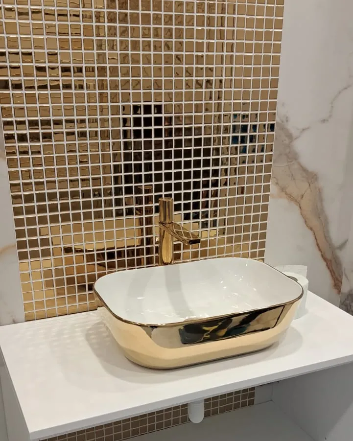
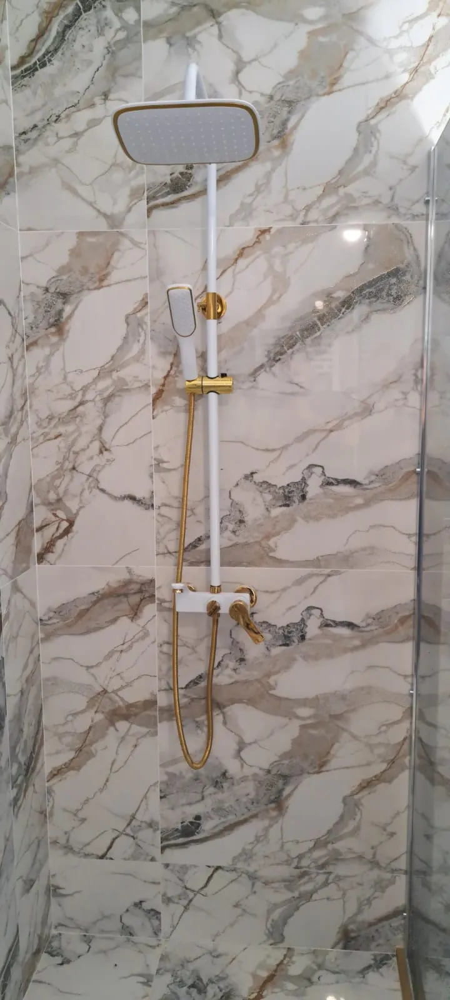
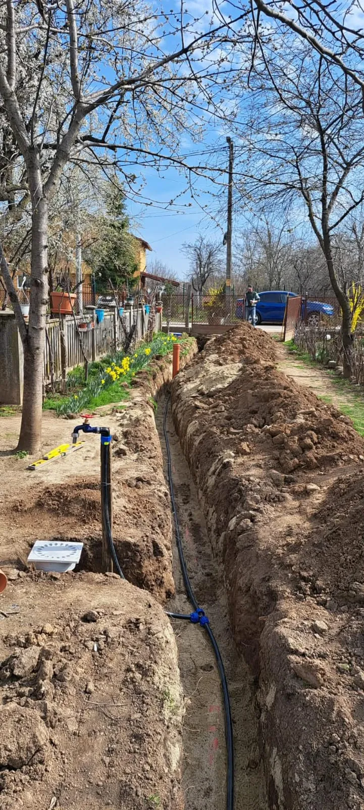

Instalator sanitar în București
De la țeava din perete până la robinet. Sunt Răzvan: refac instalații sanitare pentru băi, montez obiecte sanitare și vin la avarii. Văd lucrarea, vă spun prețul și abia apoi încep.
- Prețul îl aflați înainte de lucru
- Trasee aliniate cu nivela laser, nu din ochi
- Vorbiți direct cu omul care face lucrarea


Cu ce vă pot ajuta
Alegeți lucrarea și vedeți ce include. Pentru orice altceva legat de apă și scurgere, sunați-mă.
Instalații sanitare pentru baie
Trasee noi de apă rece, apă caldă și scurgere, trase drept și la cotele corecte, înainte de gresie și faianță.
Vezi detalii
Montaj obiecte sanitare
Coloane de duș, baterii, lavoare pe blat, căzi freestanding și vase WC, montate drept și verificate cu apă.
Vezi detalii
Reparații și avarii
Țevi fisurate, racorduri care picură, robineți care nu mai închid. Găsesc cauza și o repar.
Vezi detalii
Branșamente apă și canalizare
Țeava de apă de la cămin până în casă, canalizarea din curte și robinetul de grădină.
Vezi detaliiLucrări făcute
Câteva băi terminate și instalații înainte de finisaje.


Cum lucrăm
Patru pași, de la primul telefon până la proba cu apă.
- 1
Mă sunați sau îmi scrieți
Îmi spuneți ce aveți nevoie. Dacă puteți, trimiteți câteva poze pe WhatsApp.
- 2
Vin și văd lucrarea
Măsor, verific ce e în perete sau în pământ și vă spun ce variante aveți.
- 3
Primiți prețul
Aflați costul manoperei înainte să încep, ca să nu existe surprize la final.
- 4
Execut și verific
Montez, verific cu apă că totul e etanș și las locul curat.
Lucrați direct cu instalatorul
Sunt Răzvan, instalator sanitar în București. Când mă sunați, vorbiți cu omul care vine să facă lucrarea.
Vă spun ce e de făcut, cât costă și cât durează, apoi mă țin de ce am stabilit. Lucrez cu materiale potrivite pentru fiecare traseu, verific totul cu apă înainte să plec și las locul curat.
Fac lucrări de la o baterie care picură până la băi refăcute complet, cu obiecte sanitare alese de dumneavoastră.
Întrebări frecvente
Cât costă o lucrare?
Depinde de lucrare: o baterie schimbată nu e același lucru cu o baie refăcută complet. După ce văd locul, sau câteva poze pe WhatsApp, vă spun prețul înainte să încep.
În ce zone lucrați?
Lucrez în București. Spuneți-mi la telefon adresa și vă spun imediat când pot ajunge.
În cât timp puteți veni?
Sunați-mă și vă spun pe loc când pot ajunge. Pentru avarii încerc să vin cât mai repede.
Lucrați și cu obiecte sanitare cumpărate de mine?
Da. Îmi spuneți ce ați ales, iar eu vă zic din timp dacă mai trebuie ceva pentru montaj.
Faceți doar lucrări mari?
Nu. Vin și pentru o baterie care curge sau un sifon înfundat, nu doar pentru băi complete.
Spuneți-mi ce lucrare aveți
Sunați-mă, scrieți-mi pe WhatsApp sau lăsați numărul în formular și vă sun eu. Dacă îmi trimiteți câteva poze cu locul, vă pot spune mai repede ce e de făcut.
0725 376 962Trimiteți poze pe WhatsApp
- Vorbiți direct cu instalatorul care face lucrarea
- Aflați prețul înainte să încep
- Lucrez în București